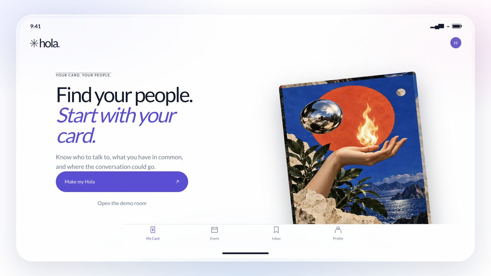

hola.
4th / 25teams · Hackathon
My contributionFront-end design · Product logic · User research
Meet with intention.
HOLA helps you discover people worth meeting before an event, and find relevant connections online through a card-draw matching experience.
Visit HOLA
HOLA · Live productWhat I learned
Building HOLA taught me that team roles are becoming increasingly fluid.
Before you arrive
Discover people you could meet at an in-person event. Know which conversations matter to you and what you hope to gain, so the event has a clearer baseline of value before you walk in.
Connections, by the draw
Online, use a card-draw experience to discover people matched to your needs — a playful way to find a relevant connection and start a conversation.